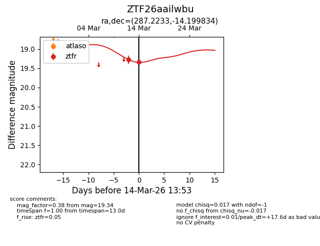
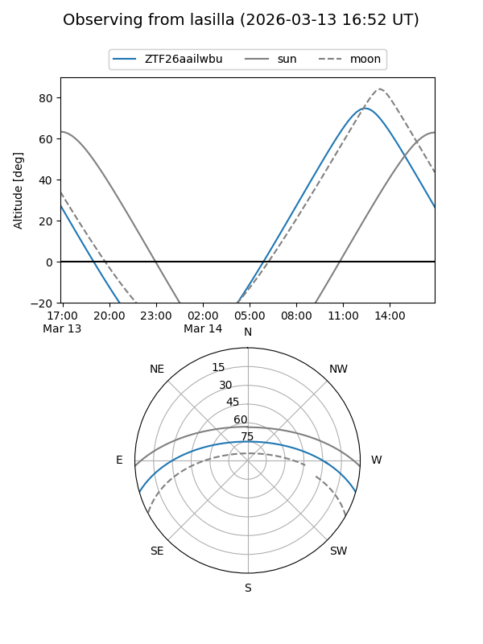
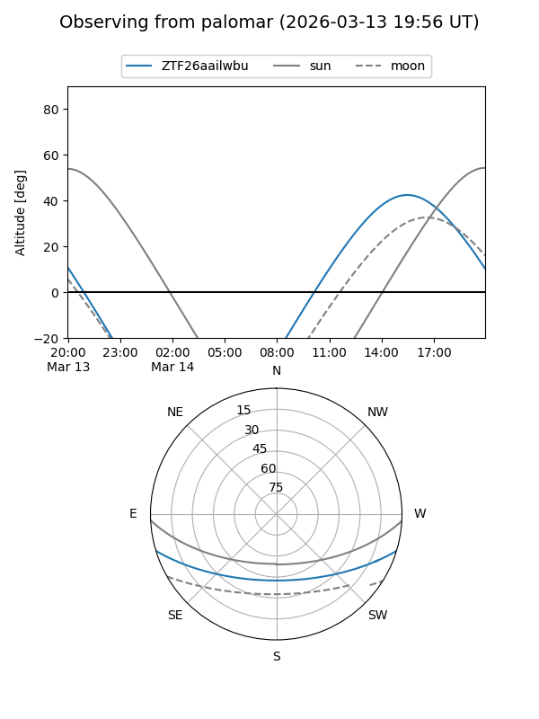
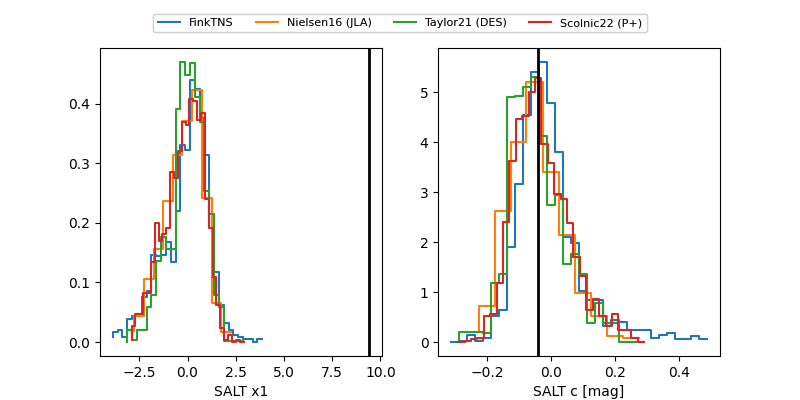

ZTF26aailwbu
Target ZTF26aailwbu at 2026-03-14 13:55
Aliases and brokers:
FINK: link
Lasair: link
ALeRCE: link
alt names
ZTF26aailwbu (ztf,fink_ztf)
Coordinates:
equatorial (ra, dec) = 287.2233,-14.19983
equatorial (HMS+DMS) = 19:08:53.60,-14:11:59.40
galactic (l, b) = (22.1155,-10.22448)
Flags:
Photometry:
last ztfr=19.34
3 ztfr detections
Lightcurve

Visibility


Additional plots
